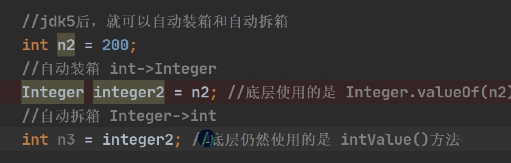

【4】 面向对象
:::info 洗衣服举例
面向过程：
放入衣服 -> 洗衣机开始清洗 -> 洗衣机开始甩干 -> 取出衣服
面向对象：
把洗衣服这件拆出来 2个对象
人 只负责 放衣服和取衣服
洗衣机 只负责 清洗 和 甩干
面向对象的好处是：一个人的 可以对应不同洗衣机 一个洗衣机 也可以 对应 不同的人
从代码上来说就是提高 代码的复用性 解除代码之间的耦合度
但是不能说 面向对象就一定比面向过程要好 他们是思想不一样
:::
| 现实世界 | 计算机模型 | Java代码 |
|---|---|---|
| 人 | 类 / class | class Person { } |
| 小明 | 实例 / ming | Person ming = new Person() |
| 小红 | 实例 / hong | Person hong = new Person() |
| 小军 | 实例 / jun | Person jun = new Person() |
同样的，“书”也是一种抽象的概念，所以它是类，而《Java 核心技术》、《Java 编程思想》、《Java 学习笔记》则是实例：
| 现实世界 | 计算机模型 | Java代码 |
|---|---|---|
| 书 | 类 / class | class Book { } |
| Java核心技术 | 实例 / book1 | Book book1 = new Book() |
| Java编程思想 | 实例 / book2 | Book book2 = new Book() |
| Java学习笔记 | 实例 / book3 | Book book3 = new Book() |
定义类
定义一个人类：
class Person{
public String name;
public int age;
}
创建实例
定义了 class，只是定义了对象模版，而要根据对象模版创建出真正的对象实例，必须用 new 操作符。
new 操作符可以创建一个实例，然后，我们需要定义一个引用类型的变量来指向这个实例：
Person ming = new Person();
上述代码创建了一个 Person 类型的实例，并通过变量 ming 指向它。
注意区分<font style="color:rgb(51, 51, 51);background-color:rgb(250, 250, 250);">Person ming</font>是定义<font style="color:rgb(51, 51, 51);background-color:rgb(250, 250, 250);">Person</font>类型的变量<font style="color:rgb(51, 51, 51);background-color:rgb(250, 250, 250);">ming</font>，而<font style="color:rgb(51, 51, 51);background-color:rgb(250, 250, 250);">new Person()</font>是创建<font style="color:rgb(51, 51, 51);background-color:rgb(250, 250, 250);">Person</font>实例。
有了指向这个实例的变量，我们就可以通过这个变量来操作实例。访问实例变量可以用<font style="color:rgb(51, 51, 51);background-color:rgb(250, 250, 250);">变量.字段</font>，例如：
ming.name = "Xiao Ming"; // 对字段 name 赋值
ming.age = 12; // 对字段 age 赋值
System.out.println(ming.name); // 访问字段 name
Person hong = new Person();
hong.name = "Xiao Hong";
hong.age = 15;
注意：一个Java源文件可以包含多个类的定义，但只能定义一个 public 类，且public类名必须与文件名一致。如果要定义多个 public 类，必须拆到多个 Java 源文件中。
方法
如果我们想要直接操作类里面的属性，那可能会造成一些不好的后果，就破坏了类的封装性。
所以我们可以使用一些方法来对属性进更改。
public class Main {
public static void main(String[] args) {
Person ming = new Person();
ming.setName("Xiao Ming"); // 设置name
ming.setAge(12); // 设置age
System.out.println(ming.getName() + ", " + ming.getAge());
}
}
class Person {
private String name;
private int age;
public String getName() {
return this.name;
}
public void setName(String name) {
this.name = name;
}
public int getAge() {
return this.age;
}
public void setAge(int age) {
if (age < 0 || age > 100) {
throw new IllegalArgumentException("invalid age value");
}
this.age = age;
}
}
在类的里面定义一些方法，可以有效的对属性数值的更改进行一个范围设置，比如年龄是0-100的范围。
外部代码就可以通过调用方法来进行间接修改字段。
除了这种被外部可以调用的public的方法也可以替换成为private关键字，将其定义为私有方法，是得外部没办法调用它，但是内部的方法可以进行调用。
public class Main {
public static void main(String[] args) {
Person ming = new Person();
ming.setBirth(2008);
System.out.println(ming.getAge());
}
}
class Person {
private String name;
private int birth;
public void setBirth(int birth) {
this.birth = birth;
}
public int getAge() {
return calcAge(2019); // 调用private方法
}
// private方法:
private int calcAge(int currentYear) {
return currentYear - this.birth;
}
}
public int getAge是公开方法，他调用了 私有方法 calAge。
this 关键字
在方法内部，可以看到上面使用了一个隐含的变量<font style="color:rgb(51, 51, 51);background-color:rgb(250, 250, 250);">this</font>，它始终指向当前实例。因此，通过<font style="color:rgb(51, 51, 51);background-color:rgb(250, 250, 250);">this.属性</font>就可以访问当前实例的字段。
如果没有命名冲突，可以省略<font style="color:rgb(51, 51, 51);">this</font>，
class Person{
private String name;
public String getName(){
return name;
}
}
但是，如果有局部变量和字段重名，那么就是局部变量优先级更高，就必须加上this。
class Person{
private String name;
public void setName(String name){
this.name = name;
}
}
局部变量 name， 也就是 setName 里面的 name 的优先级更高，去了区别两个变量，就应该在里面加上this。
方法参数
class Person {
...
public void setNameAndAge(String name, int age) {
...
}
}
第一个参数是 String，第二个参数是 int。
可变参数
可变参数用类型...定义，相当于数组类型。
class Group {
private String[] names;
public void setNames(String... names) {
this.names = names;
}
}
Group g = new Group();
g.setNames("Xiao Ming", "Xiao Hong", "Xiao Jun"); // 传入3个String
g.setNames("Xiao Ming", "Xiao Hong"); // 传入2个String
g.setNames("Xiao Ming"); // 传入1个String
g.setNames(); // 传入0个String
也可以这么写
class Group {
private String[] names;
public void setNames(String[] names) {
this.names = names;
}
}
但是，调用方需要自己先构造String[]，比较麻烦。例如：
Group g = new Group();
g.setNames(new String[] {"Xiao Ming", "Xiao Hong", "Xiao Jun"}); // 传入1个String[]
构造方法（构造器）
创建实例的时候，需要初始化实例的对象，就可以使用构造方法。
简而言之，就是构造方法要在实例的时候一次性传入参数的内容。
而不是后面在调用方法的时候，在进行参数的传入。
比如说，下面的代码：
public class Main {
public static void main(String[] args) {
Person p = new Person("Xiao Ming", 15);
System.out.println(p.getName());
System.out.println(p.getAge());
}
}
class Person {
private String name;
private int age;
public Person(String name, int age) {
this.name = name;
this.age = age;
} //构造方法，名称同类名
public String getName() {
return this.name;
}
public int getAge() {
return this.age;
}
}
这里我们可以说构造方法人类。（构造方法的名称就是类名。）构造方法的参数没有限制，在方法内部，也可以编写任意语句。但是，和普通方法相比，构造方法没有返回值（也没有<font style="color:rgb(51, 51, 51);background-color:rgb(250, 250, 250);">void</font>），调用构造方法，必须用<font style="color:rgb(51, 51, 51);background-color:rgb(250, 250, 250);">new</font>操作符。
所有 class 都有构造方法，但是在第一个例子中，没有写构造方法，这是因为编译器可以自动生成一个默认的构造方法。如下所示：
class Person{
public Person{
}
}
主要注意的是，如果自定义了一个构造方法，那么编译器就不会再自动创建构造方法了。
如果想要既带参数的构造方法，也可以定义不带参数的构造方法，那么可以把两个构造方法均定义出来。
如果既对字段进行初始化，又在构造方法中对字段进行初始化，那会发生什么？
class Person {
private String name = "Unamed";
private int age = 10;
public Person(String name, int age) {
this.name = name;
this.age = age;
}
}
当我们创建对象的时候，<font style="color:rgb(51, 51, 51);background-color:rgb(250, 250, 250);">new Person("Xiao Ming", 12)</font>得到的对象实例，字段的初始值是啥？
在 Java 中，创建对象实例的时候，按照如下顺序进行初始化：
- 先初始化字段，例如，
<font style="color:rgb(51, 51, 51);background-color:rgb(250, 250, 250);">int age = 10</font>;表示字段初始化为<font style="color:rgb(51, 51, 51);background-color:rgb(250, 250, 250);">10</font>，<font style="color:rgb(51, 51, 51);background-color:rgb(250, 250, 250);">double salary</font>;表示字段默认初始化为<font style="color:rgb(51, 51, 51);background-color:rgb(250, 250, 250);">0</font>，<font style="color:rgb(51, 51, 51);background-color:rgb(250, 250, 250);">String name;</font>表示引用类型字段默认初始化为<font style="color:rgb(51, 51, 51);background-color:rgb(250, 250, 250);">null</font>； - 执行构造方法的代码进行初始化。
因此，构造方法的代码由于后运行，所以，<font style="color:rgb(51, 51, 51);background-color:rgb(250, 250, 250);">new Person("Xiao Ming", 12)</font>的字段值最终由构造方法的代码确定。
方法重载 Overload
🤖 如果一个类中，两个方法功能差不多，但是传入的参数不一样，那么我们可以将它做成同名的方法，例如在一个类中，可以定义多个hello()方法。（补充：形式参数就是定义方法需要的参数，实际参数就传入的参数）方法的返回类型，可以相同，也可以不同，但是仅返回类型不同，是不允许的！）
class Hello {
public void hello() {
System.out.println("Hello, world!");
}
public void hello(String name) {
System.out.println("Hello, " + name + "!");
}
public void hello(String name, int age) {
if (age < 18) {
System.out.println("Hi, " + name + "!");
} else {
System.out.println("Hello, " + name + "!");
}
}
}
这样做的目的是，方便调用。
面向对象三大特征
封装 Encapsulation
封装就是把抽象出来的数据（属性）和对数据的操作（方法）封装在一起，数据被保护在内部，程序的其他部分只有通过被授权的操作（方法），才能对数据操作。
封装的实现步骤：
- 将属性进行私有化
- 提供一个公共的 set 方法，用于对属性判断并赋值
public void setXXX(类型 参数名){
属性 = 参数名；
}
- 提供一个公共的 get 方法，用于获取属性的值
public XXX getXXX(){
return xx;
}
封装思想其实就是把实现细节给隐藏了，外部只需知道这个方法是什么作用，而无需关心实现。
封装就是通过访问权限控制来实现的。
继承
继承可以实现代码的复用性，不需要写一些重复的代码，比如说想要定义一个学生类，显而易见，学生也是人类，可以说学生是人类的子类，这样学生类就可以继承人类的一些特性，比如会有名字和年龄等的特性。
Java 用 extends 来实现继承。在 { } 里面可以定义添加上新的字段和方法。
只需要写额外的的字段和方法。
class Person {
private String name;
private int age;
public String getName() {...}
public void setName(String name) {...}
public int getAge() {...}
public void setAge(int age) {...}
}
class Student extends Person {
// 不要重复name和age字段/方法,
// 只需要定义新增score字段/方法:
private int score;
public int getScore() { … }
public void setScore(int score) { … }
}
这里 Person 就是超类，父类和基类。
Student 就是子类，扩展类。
继承有个特点，就是子类无法访问父类的<font style="color:rgb(51, 51, 51);">private</font>字段或者<font style="color:rgb(51, 51, 51);">private</font>方法。例如，<font style="color:rgb(51, 51, 51);">Student</font>类就无法访问<font style="color:rgb(51, 51, 51);">Person</font>类的<font style="color:rgb(51, 51, 51);">name</font>和<font style="color:rgb(51, 51, 51);">age</font>字段。这使得继承的作用被削弱了。为了让子类可以访问父类的字段，我们需要把<font style="color:rgb(51, 51, 51);">private</font>改为<font style="color:rgb(51, 51, 51);">protected</font>。用<font style="color:rgb(51, 51, 51);">protected</font>修饰的字段可以被子类访问。
class Person {
protected String name; //修改为 protected
protected int age;
}
class Student extends Person {
public String hello() {
return "Hello, " + name; // OK!
}
}
super 的用法
super 代表父类的引用。用于访问父类的方法和属性。
多态
如果相同的方法，相同的传参，相同的返回值，不同的处理流程，那么就不叫做继承，叫做覆写（重写）。这种特性也叫做多态。上面学习了方法的重载，方法的重写和重载是不一样的，重载是原有的方法逻辑不变的情况下，支持更多参数的实现，而重写是直接覆盖原有方法！
//父类中的study
public void study(){
System.out.println("学习");
}
//子类中的study
@Override //声明这个方法是重写的，但是可以不要，我们现阶段不接触
public void study(){
System.out.println("给你看点好康的");
}
再次定义同样的方法后，父类的方法就被覆盖！子类还可以给父类方法提升访问权限！
public static void main(String[] args) {
SportsStudent student = new SportsStudent("lbw", 20);
student.study(); //输出子类定义的内容
}
思考：静态方法能被重写吗？
当我们在重写方法时，不仅想使用我们自己的逻辑，同时还希望执行父类的逻辑（也就是调用父类的方法）怎么办呢？
public void study(){
super.study();
System.out.println("给你看点好康的");
}
同理，如果想访问父类的成员变量，也可以使用super关键字来访问，注意，子类可以具有和父类相同的成员变量！而在方法中访问的默认是 形参列表中 > 当前类的成员变量 > 父类成员变量
public void setTest(int test){
test = 1;
this.test = 1;
super.test = 1;
}
抽象类
类本身就是一种抽象，而抽象类，把类还要抽象，也就是说，抽象类可以只保留特征，而不保留具体呈现形态，比如方法可以定义好，但是我可以不去实现它，而是交由子类来进行实现！
public abstract class Student {
//抽象类
public abstract void test(); //抽象方法
}
通过使用 abstract 关键字来表明一个类是一个抽象类，抽象类可以使用 abstract 关键字来表明一个方法为抽象方法，也可以定义普通方法，抽象方法不需要编写具体实现（无方法体）但是必须由子类实现（除非子类也是一个抽象类）！
抽象类由于不是具体的类定义，因此无法直接通过new关键字来创建对象！
Student s = new Student(){ //只能直接创建带实现的匿名内部类！
public void test(){
}
}
因此，抽象类一般只用作继承使用！抽象类使得继承关系之间更加明确：
public void study(){ //现在只能由子类编写，父类没有定义，更加明确了多态的定义！同一个方法多种实现！
System.out.println("给你看点好康的");
}
接口
接口甚至比抽象类还抽象，他只代表某个确切的功能！也就是只包含方法的定义，甚至都不是一个类！接口包含了一些列方法的具体定义，类可以实现这个接口，表示类支持接口代表的功能（类似于一个插件，只能作为一个附属功能加在主体上，同时具体实现还需要由主体来实现。）
public interface Eat {
void eat();
}
通过使用 interface 关键字来表明是一个接口（注意，这里 class 关键字被替换为了 interface）接口只能包含public 权限的抽象方法！（Java8 以后可以有默认实现）我们可以通过声明 default 关键字来给抽象方法一个默认实现：
public interface Eat {
default void eat(){
//do something...
}
}
接口中定义的变量，默认为public static final。
public interface Eat {
int a = 1;
void eat();
}
一个类可以实现很多个接口，但是不能理解为多继承！（实际上实现接口是附加功能，和继承的概念有一定出入，顶多说是多继承的一种替代方案）一个类可以附加很多个功能！
public class SportsStudent extends Student implements Eat, ...{
@Override
public void eat() {
}
}
类通过implements关键字来声明实现的接口！每个接口之间用逗号隔开！
实现接口的类也能通过instanceof关键字判断，也支持向上和向下转型！
内部类
类中可以存在一个类！
成员内部类
我们的类中可以在嵌套一个类：
public class Test {
class Inner{ //类中定义的一个内部类
}
}
成员内部类和成员变量和成员方法一样，都是属于对象的，也就是说，必须存在外部对象，才能创建内部类的对象！
public static void main(String[] args) {
Test test = new Test();
Test.Inner inner = test.new Inner(); //写法有那么一丝怪异，但是没毛病！
}
静态内部类
静态内部类其实就和类中的静态变量和静态方法一样，是属于类拥有的，我们可以直接通过类名.去访问:
public class Test {
static class Inner{
}
}
public static void main(String[] args) {
Test.Inner inner = new Test.Inner(); //不用再创建外部类对象了！
}
局部内部类
和局部变量一样。
public class Test {
public void test(){
class Inner{
}
Inner inner = new Inner();
}
}
匿名内部类
匿名内部类才是我们的重点，也是实现 lambda 表达式的原理！匿名内部类其实就是在 new 的时候，直接对接口或是抽象类的实现：
public static void main(String[] args) {
Eat eat = new Eat() {
@Override
public void eat() {
//DO something...
}
};
}
lambda 表达式
读作 λ 表达式，它其实就是我们接口匿名实现的简化，比如说：
public static void main(String[] args) {
Eat eat = new Eat() {
@Override
public void eat() {
//DO something...
}
};
}
public static void main(String[] args) {
Eat eat = () -> {}; //等价于上述内容
}
lambda 表达式（匿名内部类）只能访问外部的 final 类型或是隐式 final 类型的局部变量！
枚举类
假设现在我们想给小明添加一个状态（跑步、学习、睡觉），外部可以实时获取小明的状态：
public class Student {
private final String name;
private final int age;
private String status;
//...
public void setStatus(String status) {
this.status = status;
}
public String getStatus() {
return status;
}
}
但是这样会出现一个问题，如果我们仅仅是存储字符串，似乎外部可以不按照我们规则，传入一些其他的字符串。这显然是不够严谨的！
有没有一种办法，能够更好地去实现这样的状态标记呢？我们希望开发者拿到使用的就是我们定义好的状态，我们可以使用枚举类！
public enum Status {
RUNNING, STUDY, SLEEP //直接写每个状态的名字即可，分号可以不打，但是推荐打上
}
使用枚举类也非常方便，我们只需要直接访问即可。
public class Student {
private final String name;
private final int age;
private Status status;
//...
public void setStatus(Status status) { //不再是String，而是我们指定的枚举类型
this.status = status;
}
public Status getStatus() {
return status;
}
}
public static void main(String[] args) {
Student student = new Student("小明", 18);
student.setStatus(Status.RUNNING);
System.out.println(student.getStatus());
}
枚举类型使用起来就非常方便了，其实枚举类型的本质就是一个普通的类，但是它继承自 Enum 类，我们定义的每一个状态其实就是一个 public static final 的 Status 类型成员变量！
// Compiled from "Status.java"
public final class com.test.Status extends java.lang.Enum<com.test.Status> {
public static final com.test.Status RUNNING;
public static final com.test.Status STUDY;
public static final com.test.Status SLEEP;
public static com.test.Status[] values();
public static com.test.Status valueOf(java.lang.String);
static {};
}
既然枚举类型是普通的类，那么我们也可以给枚举类型添加独有的成员方法
public enum Status {
RUNNING("睡觉"), STUDY("学习"), SLEEP("睡觉"); //无参构造方法被覆盖，创建枚举需要添加参数（本质就是调用的构造方法！）
private final String name; //枚举的成员变量
Status(String name){ //覆盖原有构造方法（默认private，只能内部使用！）
this.name = name;
}
public String getName() { //获取封装的成员变量
return name;
}
}
public static void main(String[] args) {
Student student = new Student("小明", 18);
student.setStatus(Status.RUNNING);
System.out.println(student.getStatus().getName());
}
枚举类还自带一些继承下来的实用方法
Status.valueOf("") //将名称相同的字符串转换为枚举
Status.values() //快速获取所有的枚举
包装类
Java并不是纯面向对象的语言，虽然Java语言是一个面向对象的语言，但是Java中的基本数据类型却不是面向对象的。在学习泛型和集合之前，基本类型的包装类是一定要讲解的内容！
我们的基本类型，如果想通过对象的形式去使用他们，Java提供的基本类型包装类，使得Java能够更好的体现面向对象的思想，同时也使得基本类型能够支持对象操作！
基本类型包装类：
- 针对八种基本相应的引用类型- 包装类
- 有了类的特点，就可以调用类中的方法
| 基本数据类型 | 包装类 |
|---|---|
| boolean | Boolean |
| char | Character |
| byte | Byte |
| short | Short |
| int | Integer |
| long | Long |
| float | Float |
| double | Double |
包装类实际上就行将我们的基本数据类型，封装成一个类（运用了封装的思想）
private final int value; //Integer内部其实本质还是存了一个基本类型的数据，但是我们不能直接操作
public Integer(int value) {
this.value = value;
}
现在我们操作的就是 Integer 对象而不是一个 int 基本类型了！
public static void main(String[] args) {
Integer i = 1; //包装类型可以直接接收对应类型的数据，并变为一个对象！
System.out.println(i + i); //包装类型可以直接被当做一个基本类型进行操作！
}
手动装箱和拆箱
那么为什么包装类型能直接使用一个具体值来赋值呢？其实依靠的是自动装箱和拆箱机制。
包装类和基本数据的转换。
在jdk5之前，手动装箱和拆箱方式：

jdk5之后，就采取了自动装箱和拆箱。

更新: 2023-01-02 16:30:21
原文: https://www.yuque.com/xiaoshan_wgo/codingnotes/zvgsz3vkip4i7ae0